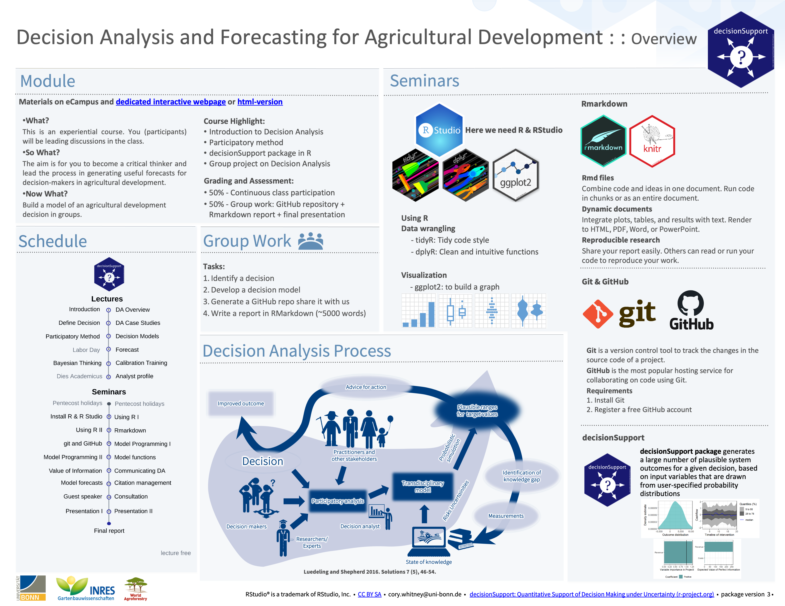

Lecture 1: Introduction

Welcome to Decision Analysis and Forecasting for Agricultural Development. We are excited to deliver you this course content and to train a new generation of experts in applying these tools. We see enormous scope for application of these methods in agriculture and the need for more practitioners. The course has a dedicated interactive website but if you prefer you can also look at the simple html version.
Decisions in agriculture are often risky, meaning that decision makers have uncertainty about how their decision will influence the intended outcomes. Farming systems are dynamic and the impact of any intervention, policy or management decision is likely to be influenced by many factors ranging from soil and crop dynamics to social dynamics such as farmer and community perceptions. In order to provide scientific support for decision making it is important that our models and forecasts attempt to include these interactions. Decision Analysis provides a set of approaches that are aimed at capturing what is known and applying this knowledge to generate forecasts of decision outcomes. The theoretical body of approaches have been formally applied in business and economics for more than 50 years Howard and Abbas (2015) and have been gaining ground in agricultural development research more recently Luedeling and Shepherd (2016). Our mission is to normalize these holistic approaches and move agricultural science from the lab bench and field trials to real world application and decision support for farmers and agricultural decision makers such as those in government ministries and aid organizations.
A student is not a vessel to be filled, but a lamp to be lighted… - Plutarch
What? This is an experiential course. You (participants) will be leading discussions and projects.
So What? The aim is for you to become a critical thinker and lead the process in generating useful forecasts for decision makers in agricultural development.
Now What? You will build a working model of an agricultural development decision.
Here is a course overview:

Course content
In this course, we will provide an overview of methods we can use to study agricultural development decisions and generate forecasts of decision outcomes. If you do not have a clear idea what that is you’ve come to the right place. This course was developed for MSc. students in Crop Sciences at the University of Bonn, but the materials are also intended for a general audience interested in applying these tools. The main parts of the course include:
- Introduction to Decision Analysis
- Calibration training
- Participatory modeling building
- Decision modeling in R
- Group project on decision analysis
See the official pages in the coursebook here Decision Analysis and Forecasting for Agricultural Development.
After some introduction of the subject matter much of this course
will consist of practical application of the decisionSupport
package in the R programming
language (R Core Team 2023).
Intended learning outcomes
In this course, we aim to provide you with the skills and experiences in decision modeling. By the end of this course you will be able to:
develop decision models and comprehensively evaluate the findings using the
Rprogramming language with functions from thedecisionSupportpackage (Luedeling et al. 2023).recognize your own biases and provide accurate range estimates for uncertain variables.
analyze a decision context. You will be able to draw conclusions from a decision model and recommend steps forward.
develop decision models, comprehensively evaluate your findings and compose a report about the model you developed.
Performance assessment
In this module, there will be no exam, but you’ll still have to put in a bit of effort to pass and get a good grade here. Over the course of the semester, you’ll be developing an Rmarkdown document, where you’ll record your learning and your coding work (here is an example from Hoa Do with an overview that includes the main modeling procedures with the decisionSupport package in R) (Luedeling et al. 2023). This document will contain short thematic chapters on the lecture contents, as well as the code you’ll produce and the outputs you’ll generate. The final chapters will contain some discussion of the results you’ll have obtained. This document will be evaluated, and it will be the major determinant of your final grade (participation in class will also count for some of the grade).
There will be about 60 hours of formal in-class time (15 ~ 4 hour lectures and seminars) and 120 hours of work outside the class.
What we expect from you
Class participation will be about 50% of the work in this course. We will expect you to show up in class and be an active participant in discussions. We may also have short weekly tests for seeing how up to speed you are and we will track your project activity (follow your git repositories etc.).
Group work will make up the rest of the required work for this course. You will put together a report, build a repository with code and a working RMarkdown file. You will also do weekly reading/listening assignments and lead short related discussions.
House rules
In this course, we’ll gradually work our way into the
decisionSupport package (Luedeling
et al. 2023). At the end of the semester, you should be able to
apply state-of-the-art Decision Analysis. Yet even if it’s not your
ambition to become a decision analyst, you’ll have picked up a bunch of
useful skills along the way. We’ll try to teach you how to use some
staple programming tools and techniques that can be used for all kinds
of programming challenges. These will include the use of git and github and Rmarkdown,
as well the the ability to create, manipulate and use R functions and
packages.
What is expected of you is to be engaged in this class, and to diligently complete the assignments you receive. Learning things in R requires practice, through which many things that seem cumbersome at first eventually become almost automatic. We are hopeful that the things you’ll get exposed to in this class will be assets in your scientific (or other) career. So please take the materials seriously!
This course not only aims to teach you things about Decision Analysis
and related topics - it also provides hands-on exercises to illustrate
the functions of the decisionSupport package Luedeling et al. (2023). For all of these
practical components, we need tools. decisionSupport is an
R package, so we’ll need R,
which is most comfortably operated through the RStudio interface.
We could simply start running RStudio on our local computer, save our files somewhere on our hard drive and generally operate the way we usually work with our computer. But this is not how real programmers work, and since this is what we’re trying to be, we should familiarize ourselves with some code development tools that such people use. We’ll therefore introduce you to git and github, which are very useful for keeping code organized and secure and for sharing with collaborators and wider audiences.
Finally, we want to show you how to properly document what you do in R, and how to compile professional-looking reports of your work. This is what Rmarkdown helps us do. Some of this may be a bit confusing in the beginning, but you’ll probably learn to appreciate the value of these tools, as we keep using them in this module.
Group Work
The course will be largely based on group work. Please take some time to choose a group to work with and begin to think about a decision. Over the next few weeks you will be responsible for the following milestones:
Identify a decision
Collaborate with decision makers on decision model development (qualitative)
Generate model code from qualitative model and parameterize (quantitative step)
Generate a git repo with code and documentation
Write a ~ 5,000 word paper in RMarkdown, see this report on plotting high-dimensional data for a useful example of how this can be done.
In addition, each week small teams (groups of two or three) will be responsible for presenting and leading a discussion on a short paper or chapter. We expect everyone in the course to read the work and come prepared for the meeting. Please contact us if you cannot find the readings in the library or elsewhere. We will help you get a copy.
Bonus video from Sir Ken Robinson
Bonus: to get more background on the teaching methods that inspire this course watch Sir Ken Robinson’s talk on Ted.com. If you like it you might enjoy reading his book ‘Out of Our Minds’ (Robinson 2017).
Lecture schedule
| Lecture | Date | Materials | Reading |
|---|---|---|---|
| 1 | Wednesday, April 10, 2024 | Introduction | Watch: Sir Ken Robinson / Hans Rosling (optional) |
| 2 | Friday, April 12, 2024 | Decision Analysis Overview | Hubbard (2014) (Chapter 1. The Challenge of Intangibles) |
| 3 | Wednesday, April 17, 2024 | Defining a Decision | Howard and Abbas (2015) (Chapter 1. Introduction to Quality Decision Making) |
| 4 | Friday, April 19, 2024 | Decision Analysis Case Studies | Shepherd et al. (2015) |
| 5 | Wednesday, April 24, 2024 | Participatory Methods | Luedeling and Shepherd (2016) |
| 6 | Friday, April 26, 2024 | Building Decision Models | Do, Luedeling, and Whitney (2020) |
| 7 | Friday, May 3, 2024 | Using Models to Create Forecasts | Tetlock and Gardner (2015) (Chapter 1. An Optimistic Skeptic) |
| 8 | Wednesday, May 8, 2024 | Bayesian Thinking | Bertsch McGrayne (2011) (Chapter 1. Causes in the Air) |
| 9 | Friday, May 10, 2024 | Calibrating experts | Kahneman and Egan (2011) (Chapter 1) |
| 10 | Friday, May 17, 2024 | Profile of a Decision Analyst | Savage and Markowitz (2009) (Chapter 1) |
Seminar schedule
| Week | Date | Materials | Assignment |
|---|---|---|---|
| 1 | Wednesday, May 28, 2024 | Group Work Overview | Install R and Rstudio |
| 2 | Friday, May 31, 2024 | Using R and RStudio | Share R scripts (part 1) |
| 3 | Wednesday, June 5, 2024 | Using R and RStudio continued | Share R scripts (part 2) |
| 4 | Friday, June 7, 2024 | Using RMarkdown | Share Rmarkdown file |
| 5 | Wednesday, June 12, 2024 | Using git and Github | Start a Github repo |
| 6 | Friday, June 14, 2024 | Model Programming | Share R scripts (part 3) |
| 7 | Wednesday, June 19, 2024 | Calibration training | Participate in calibration training |
| 8 | Friday, June 21, 2024 | Model functions | Share updated model |
| 9 | Wednesday, June 26, 2024 | Value of information | Share R scripts (part 3) |
| 10 | Friday, June 28, 2024 | Communicating Decision Support | |
| 11 | Wednesday, July 03, 2024 | Model forecasts | Share initial forecasts |
| 12 | Friday, July 5, 2024 | Citation Management | Join Zotero Group |
| 13 | Wednesday, July 10, 2024 | Guest Lecture | |
| 14 | Friday, July 12, 2024 | Consultation | |
| 15 | Wednesday, July 17, 2024 | Groups present / discuss final model | Present |
| 16 | Friday, July 19, 2024 | Presentations continued | Present |
Lecture 2: Decision Analysis Overview
“Everything is vague to a degree you do not realize till you have tried to make it precise.”
― Whitehead and Russell (2011)
Welcome to lecture 2 of Decision Analysis and Forecasting for
Agricultural Development. In this lecture we will follow a six-part
micro-series of videos and use the #lecture-02-overview
Slack channel and Zoom meeting to follow up. This will allow us all to
have a chance to see your progress, provide feedback. It will be
encouraging to others to see activity from colleagues. Feel free to
bring up any questions or concerns in the Slack or to Dr. Cory
Whitney or the course tutor.
Please take a few minutes to watch these six short videos and do the associated exercises. The slides will be shared in the respective Slack channels.
Introduction
The introduction outlines the general theory and application of Decision Analysis tools. At the end of the video please take a moment to think about decisions that are made in agricultural development, ideally decisions that are relevant to your research interests. Please share these with us in the Slack channel.
Remember to take a moment to gather your thoughts so far and share with us in Slack.
Part 1: Approaches
Part 1 gives an overview of various approaches in agricultural research and of the Decision Analysis paradigm. At the end of the video please take a moment to think about a situation where Decision Analysis might be applicable. Try and identify a decision maker with a choice between different options and with uncertainty about the outcome.
Remember to share a specific risky decision that might be supported with these tools. Share your ideas with us in Slack.
Part 2: Decision Analysis
Part 2 offers some background on the theory and development of Decision Analysis and how we apply it in agricultural decisions.
At the end of the video please take some time to think about a practical application of the kinds of approaches to dealing with uncertainty that are used in Decision Analysis. Describe a few variables that you consider difficult to measure but for which the effects on a decision might be possible to describe as uncertainty distributions. Share with us in Slack.
Part 3: Model Building
Part 3 gives an overview of model building processes and approaches.
At the end of this video take some time to draw a decision impact pathway. Draw a conceptual diagram of an agricultural development decision. Include the major factors that would influence the decision, no matter how difficult they might be to measure. Feel free to use any program you like to make this drawing. Loopy is a very nice interface. Google Slides, Biorender are also good options. For the more advance R users you might like the igraph library. For those who prefer analog, a photo or scan of a hand drawn diagram is also welcome. Be sure to save your work and share it with us in Slack, a screen shot is fine, a working link is even better.
Part 4: Overcoming Bias
Part 4 gives an overview of various types of cognitive biases and outlines how these can interfere with the definition of and parameterization of models. The session ends with a number of approaches that can be applied to help in overcoming these biases and outlines the calibration training process whereby experts are trained to give accurate estimates of their own uncertainty.
At the end of the video please take some time to consider the variables in your conceptual diagram that might benefit from calibrated estimates. Describe variables in your model that might be difficult to measure but the effects of which might be possible to describe with calibrated-expert derived uncertainty distributions.
Parts 5 and 6: Case Studies, Conclusions
Parts 5 and 6 offer some brief Decision Analysis case studies and conclusions. At the end of the video please take some time to revisit your model and consider these approaches in practice. Feel free to discuss in Slack about what application these approaches might have with regard to your research.
Group discussion reading:
This week you will all read Hubbard (2014) (Chapter 1, pp 1-14). The first group will lead a discussion on the reading.
- Hubbard, Douglas W. How To Measure Anything: Finding the Value of Intangibles in Business. 2nd ed. Vol. Second Edition. Hoboken, New Jersey: John Wiley & Sons, 2014. Part 1:The measurement solution exists
Bonus video by Professor Karl Claxton
Bonus: to get an economist’s perspective on the Decision Analysis approaches watch ‘Lessons from applying decision science in the public health sector’ by Professor Karl Claxton in the Constructing a Digital Environment Webinar Series. The talk gets really interesting at around eight minutes in.
Lecture 3: Defining a Decision
The following videos cover some of the challenges that researchers and agricultural development experts face when attempting to define decisions. Please watch the videos and answer the questions that follow.
Defining Decisions Part 1
Defining Decisions Part 2
Think about the following questions and jot down your thoughts.
- Does decision analysis make sense without involving a decision-maker?
- What can this achieve, and what shouldn’t we expect from it?
Defining Decisions Part 3
Think of challenges you may encounter when trying to do credible, salient and legitimate research (all of which decision analysts should aim to achieve).
Quality Decision Making
This video outlines the background for quality decision making, closely following Howard and Abbas (2015). At the end of the video please take some time to sketch out some thoughts about a decision that you will be working on for the experiential part of this course. You can find the slides for the first three parts of the lecture here.
- Define the decision-maker: The person, organization or group that will be faced with choices.
- Define the decision choice and alternatives: from which to choose
- Define the preferences: clarify how the decision-makers consider the different possible consequences and outcomes of the decision. These can take many forms, i.e. they can be personal, societal or cultural values.
- Define the sources of Information: What sources of information will you access to gather a causal understanding of the decision impact pathway. Be explicit about where you will reach out, i.e. specific farmers, literature etc.
Group discussion reading:
This week you will all read Howard and Abbas (2015) (Chapter 1. Introduction to Quality Decision Making). One group will lead a discussion on the reading.
Reading for this lecture
- Howard, Ronald A., and Ali E. Abbas. Foundations of Decision Analysis. NY, NY: Prentice Hall, 2015.
Bonus reading by Shepherd et al. (2015).
- Shepherd, Keith, Douglas Hubbard, Norman Fenton, Karl Claxton, Eike Luedeling, and Jan de Leeuw. “Development Goals Should Enable Decision-Making.” Nature 523, no. 7559 (2015): 152–54.
Lecture 4: Decision Analysis Case Studies
Welcome to lecture 4 of Decision Analysis and Forecasting for
Agricultural Development. In this lecture we will follow three
case studies and use the #lecture-04-case-studies Slack
channel and Zoom meeting to follow up. This will allow us all to have a
chance to see your progress, provide feedback. As always, your
engagement and sharing is appreciated. It will be encouraging to others
to see activity from colleagues. Feel free to bring up any questions or
concerns in the Slack or to Dr. Cory
Whitney or the course tutor.
Please take a few minutes to watch these short videos and do the associated exercises before our meeting.
Introduction
The following videos introduce some decision analysis case studies. Please watch the videos and answer the questions that follow.
Decision analysis case - Water for Wajir
The city of Wajir in Northern Kenya has lacks a reliable supply of clean drinking water and sanitation. To improve the situation, plans are being considered to construct a water pipeline from Habaswein over 100 km away (Luedeling and Leeuw 2014; Luedeling et al. 2015). Watch the following video to learn more.
Now try to answer the following questions:
Case study - Plastic covers in sweet cherry orchards in Chile
This video shows the study Rojas et al. (2021) conducted in Chile for assessing the profitability of implementing plastic covers in sweet cherry orchards to protect the fruits from hazardous weather events.
Based on the question above, think about and write down two to three positive and negative implications of using the method we used to define the decision.
The data and scripts for this study are also available online (Fernandez et al. 2021).
Group discussion reading:
- Luedeling, Eike, and Keith Shepherd. “Decision-Focused Agricultural Research.” Solutions 7, no. 5 (2016): 46–54.
Lecture 5: Participatory Methods For Qualitative Model Development
Participatory methods
The following video outlines some of the tools that can be used in participatory modeling. Watch the video and answer the questions that follow.
Stakeholder management
The following video covers some definitions, methods and tools and a case study related to stakeholder management in decision analysis. Please watch the videos and answer the questions that follow. These will be helpful in determining which tools/techniques you might use to identify stakeholders in your decision analysis process.
Group discussion reading:
Luu et al
Further Reading
Liberating Structures by Keith McCandless (and others)
Reed, M. S. et al. (2009) ‘Who’s in and why? A typology of stakeholder analysis methods for natural resource management’, Journal of Environmental Management, 90(5), pp. 1933–1949. doi: 10.1016/j.jenvman.2009.01.001.
Lecture 6: Building Decision Models
Welcome to lecture 6 of Decision Analysis and Forecasting for Agricultural Development. We will walk through brief examples and offer the scripts. Feel free to bring up any questions or concerns in the Slack, to Dr. Cory Whitney or to the course tutor.
Decision-makers often wish to have a quantitative basis for their decisions. However,‘hard data’ is often missing or unattainable for many important variables, which can paralyze the decision-making processes or lead decision-makers to conclude that large research efforts are needed before a decision can be made. That is, many variables decision makers must consider cannot be precisely quantified, at least not without unreasonable effort. The major objective of (prescriptive) decision analysis is to support decision-making processes faced with this problem. Following the principles of Decision Analysis can allow us to make forecasts of decision outcomes without precise numbers, as long as probability distributions describing the possible values for all variables can be estimated.
The decisionSupport package implements this as a Monte
Carlo simulation, which generates a large number of plausible system
outcomes, based on random numbers for each input variable that are drawn
from user-specified probability distributions. This approach is useful
for determining whether a clearly preferable course of action can be
delineated based on the present state of knowledge without the need for
further information. If the distribution of predicted system outcomes
does not imply a clearly preferable decision option, variables
identified as carrying decision-relevant uncertainty can then be
targeted by decision-supporting research. This approach is explained in
more detail below and in the model
programming seminar.
In this portion of the course we hope to introduce you to the methods and inspire you to follow a few important guidelines in the process of model building. One of the key aspects of model building has to do with making a solid business case for the model before programming.
Another important guideline is to start simple then move on to other steps. This ensures that you always have a working model at each of the steps in the process, i.e. starting with a skateboard rather than a car part as in this example from MetaLab.
Before you start developing the decision model (an R function), open
R and download and load the decisionSupport package.
install.packages("decisionSupport")
library(decisionSupport)Creating a model
The mcSimulation function from the
decisionSupport package can be applied to conduct decision
analysis (Luedeling et al. 2023). The
function requires three inputs:
- an
estimateof the joint probability distribution of the input variables. These specify the names and probability distributions for all variables used in the decision model. These distributions aim to represent the full range of possible values for each component of the model. - a
model_functionthat predicts decision outcomes based on the variables named in a separate data table. This R function is customized by the user to address a particular decision problem to provide the decision analysis model.
numberOfModelRunsindicating the number of times to run the model function.
These inputs are provided as arguments to the
mcSimulation function, which conducts a Monte Carlo
analysis with repeated model runs based on probability distributions for
all uncertain variables. The data table and model are customized to fit
the particulars of a specific decision.
The estimate
To support the model building process we design an input table to
store the estimate values. The table is stored locally as
example_decision_inputs.csv and contains many of the basic
values for the analysis. This table contains all the input variables
used in the model. Their distributions are described by 90% confidence
intervals, which are specified by lower (5% quantile) and upper (95%
quantile) bounds, as well as the shape of the distribution. This example
uses four different distributions:
const– a constant valuenorm– a normal distributiontnorm_0_1– a truncated normal distribution that can only have values between 0 and 1 (useful for probabilities; note that 0 and 1, as well as numbers outside this interval are not permitted as inputs)posnorm– a normal distribution truncated at 0 (only positive values allowed)
For a full list of possible distributions, type
?random.estimate1d in your R console. When specifying
confidence intervals for truncated distributions, note that
approximately 5% of the random values should ‘fit’ within the truncation
interval on either side. If there is not enough space, the function will
generate a warning (usually it will still work, but the inputs may not
look like you intended them to).
We have provided default distributions for all the variables used
here, but feel free to make adjustments by editing the .csv file in a
spreadsheet program. You can download the ‘example_decision_inputs.csv’
here and save it as a .csv file locally (from your web browser try: File
> Save page as). In this example it is stored in the ‘data’ folder.
Once you have downloaded the data you can run
example_decision_inputs <- read.csv("data/example_decision_inputs.csv")
in your console to make the following code work on your machine. Note
that the input table that can be written or read from a .csv file and
calculated with the estimate_read_csv function or converted
to the correct format with the as.estimate function.
The model_function
The decision model is coded as an R function which takes in the variables provided in the data table and generates a model output, such as the Net Present Value.
Create a simple function
Here we define a simple model function that we call
example_decision_model. It calculates profits as benefits
minus costs and arbitrarily adds 500 to the result to arrive at
final_profits. This simple example shows us how to use
function, the results of which can be applied elsewhere.
The most basic way to apply the library is to use the
mcSimulation function to run our
example_decision_model. Here we run it 100 times using
inputs from the example_decision_inputs.csv table.
Update this model by adding additional_benefits, one of
the variables from the example_decision_inputs data, to
replace the 500 that was arbitrarily added to the profit and changing
the number of model runs to 700.
example_decision_model <- function(x, varnames){
profit <- benefits-costs
final_profits <- profit + 500
return(final_profits)
}
mcSimulation(estimate = as.estimate(example_decision_inputs),
model_function = example_decision_model,
numberOfModelRuns = 100,
functionSyntax = "plainNames")example_decision_model <- function(x, varnames){
profit <- benefits-costs
final_profits <- profit + additional_benefits
return(final_profits)
}
mcSimulation(estimate = as.estimate(example_decision_inputs),
model_function = example_decision_model,
numberOfModelRuns = 700,
functionSyntax = "plainNames")Now we have a simulation of possible outcomes. In the model programming seminar this week we will go into more detail on the options for assessment of the results of simulations and on visualization of the results.
Note that this example was constructed for clarity and not for speed.
Speed considerations are not very important when we only run a process
once, but since in the Monte Carlo simulation all delays are multiplied
by numberOfModelRuns (e.g. 10,000), they can sometimes add
up to substantial time losses. Even with highly efficient coding, Monte
Carlo simulations can take a while when dealing with complex
decisions.
The objective of the procedures used in the
decisionSupport package is to make it easier for analysts
to produce decision-relevant information that adequately reflects the
imperfect nature of the information we usually have. Adding
probabilistic elements to a simulation adds substantial value to an
analysis. Mostly, it avoids making spurious assumptions, replacing
uncertainty with ‘best bets’ and producing results that do not reflect
the knowledge limitations that make decision-making so challenging. More
information on all this is contained in the decisionSupport
manual, especially under welfareDecisionAnalysis.
Group discussion reading:
- Do, Luedeling, and Whitney (2020) ‘Decision analysis of agroforestry options reveals adoption risks for resource-poor farmers’.
Bonus: Further reading
Whitney et al. (2018) ‘Probabilistic decision tools for determining impacts of agricultural development policy on household nutrition’.
Ruett, Whitney, and Luedeling (2020) ‘Model-based evaluation of management options in ornamental plant nurseries’
References